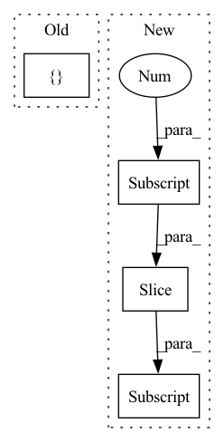

Pattern ID :29022
Before Change
// Memory querying and responding for visual features
//dummy_memory_matrix = self.memory_matrix.unsqueeze(0).expand(att_feats.size(0), self.memory_matrix.size(0), self.memory_matrix.size(1))
responses = []
for i in range(att_feats.size(0)):
query_matrix = []
for j in range(len(labels[i])):
if labels[i, j] == 1:After Change
cur_query_matrix = torch.stack(cur_query_matrix, 0)
//print("111",query_matrix[i, :cur_query_matrix.shape[0], :].shape, cur_query_matrix.shape)
query_matrix[i, :cur_query_matrix.shape[0], :] = cur_query_matrix
cmn_masks[i, :, :cur_query_matrix.shape[0]] = 1
responses = self.cmn(att_feats, query_matrix, query_matrix, cmn_masks)
//embeddings = embeddings + responsesIn pattern: SUPERPATTERN
Frequency: 3
Non-data size: 4
Instances Fragment ID: 85596841
Project Name: markin-wang/xpronet
Commit Name: f1eadeb44fcd3ca935352b9cc7d30eab0fa8c753
Time: 2021-11-21
Author: cserwj@gmail.com
File Name: modules/base_cmn.py
M Class Name: BaseCMN
N Class Name: BaseCMN
M Method Name: _prepare_feature_forward(5)
N Method Name: _prepare_feature_forward(5)
M Parent Class: AttModel
N Parent Class: AttModel
M File Name: modules/base_cmn.py
N File Name: modules/base_cmn.py
M Start Line: 402
M End Line: 451
N Start Line: 391
N End Line: 444
Before Change
// Concatenate so that for row $m$ we have
// $[m \theta_0, m \theta_1, ..., m \theta_{\frac{d}{2}}, m \theta_0, m \theta_1, ..., m \theta_{\frac{d}{2}}]$
idx_theta2 = torch.cat([ idx_theta, idx_thetaAfter Change
// \end{align}
//
// for $i \in {1, 2, ..., \frac{d}{2}}$
x_rope = (x_rope * self.cos_cached[:x.shape[0]]) + (neg_half_x * self.sin_cached[:x.shape[0]] )
//
return torch.cat((x_rope, x_pass), dim=-1) Fragment ID: 85596831
Project Name: lab-ml/nn
Commit Name: 0ce65adf9e602321109528b05cf99fccb16cd2de
Time: 2022-06-03
Author: vpjayasiri@gmail.com
File Name: labml_nn/transformers/rope/__init__.py
M Class Name: RotaryPositionalEmbeddings
N Class Name: RotaryPositionalEmbeddings
M Method Name: forward(2)
N Method Name: forward(2)
M Parent Class: nn.Module
N Parent Class: nn.Module
M File Name: labml_nn/transformers/rope/__init__.py
N File Name: labml_nn/transformers/rope/__init__.py
M Start Line: 132
M End Line: 163
N Start Line: 171
N End Line: 193
Before Change
// compute DER
stats = { "DER": loss} // dummy for now
return loss, stats
After Change
predictions, lens = predictions
targets = targets[1].to(predictions.device)
predictions = predictions[:, :targets.shape[-1], 0]
loss = params.compute_cost(torch.nn.BCEWithLogitsLoss(reduction="none"), predictions, targets, lens)
self.metrics.update(torch.sigmoid(predictions), targets)
// compute DER Fragment ID: 85596834
Project Name: speechbrain/speechbrain
Commit Name: 93ed77e35318dd7fe1c3f6bdd5eeb919113e9cea
Time: 2020-08-11
Author: cornellsamuele@gmail.com
File Name: recipes/minimal_examples/neural_networks/VAD/example_vad.py
M Class Name: VADBrain
N Class Name: VADBrain
M Method Name: compute_objectives(4)
N Method Name: compute_objectives(4)
M Parent Class: sb.core.Brain
N Parent Class: sb.core.Brain
M File Name: recipes/minimal_examples/neural_networks/VAD/example_vad.py
N File Name: recipes/minimal_examples/neural_networks/VAD/example_vad.py
M Start Line: 44
M End Line: 50
N Start Line: 36
N End Line: 42